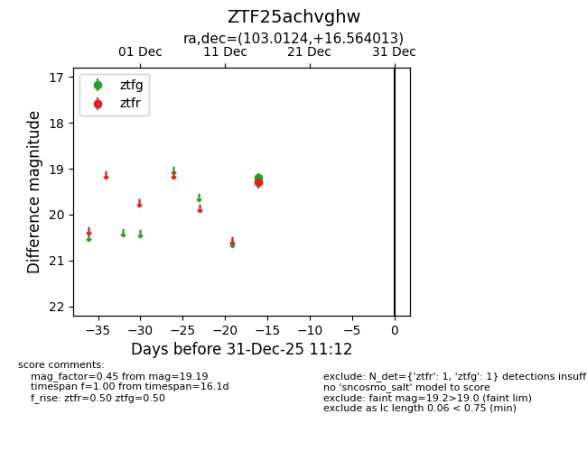
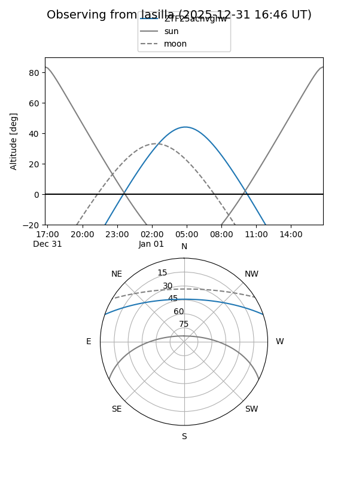
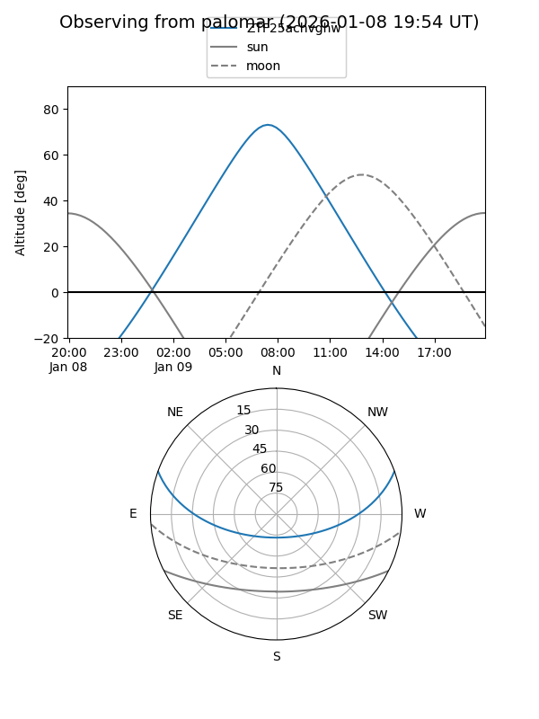

ZTF25achvghw
Target ZTF25achvghw at 2025-12-18 11:18
Aliases and brokers:
FINK: fink-portal.org/ZTF25achvghw
Lasair: lasair-ztf.lsst.ac.uk/objects/ZTF25achvghw
ALeRCE: alerce.online/object/ZTF25achvghw
alt names
ZTF25achvghw (ztf,fink_ztf)
Coordinates:
equatorial (ra, dec) = 103.0124,+16.56401
equatorial (HMS+DMS) = 06:52:02.99,+16:33:50.45
galactic (l, b) = (198.1705,+7.60091)
Photometry
last ztfg=19.19, ztfr=19.29
1 ztfg, 1 ztfr detections
Lightcurve

Visibility


Additional plots